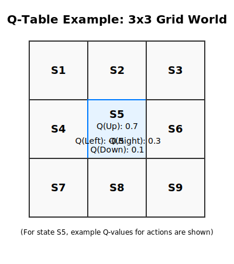

import gymnasium as gym
import time
# 创建环境，render_mode="human" 会弹出一个窗口显示动画
# 如果不需要可视化，可以使用 render_mode="rgb_array"
try:
env = gym.make("CartPole-v1", render_mode="human")
# 重置环境到初始状态
observation, info = env.reset()
print("Initial Observation:", observation)
total_reward = 0
for episode in range(3): # 玩3个回合
print(f"--- Episode {episode+1} ---")
observation, info = env.reset()
terminated = False
truncated = False
episode_reward = 0
for step_idx in range(200): # 每个回合最多运行200步
if env.render_mode == "human":
env.render() # 渲染当前帧
# 随机选择一个动作 (0: 向左推, 1: 向右推)
action = env.action_space.sample()
# 执行动作
observation, reward, terminated, truncated, info = env.step(action)
episode_reward += reward
if terminated or truncated:
print(f"Episode finished after {step_idx+1} steps. Episode reward: {episode_reward}")
total_reward += episode_reward
if env.render_mode == "human":
time.sleep(0.5) # 等待看结果
break
if env.render_mode == "human":
time.sleep(0.02) # 减慢动画速度
print(f"Total reward over {episode+1} episodes: {total_reward}")
except Exception as e:
print(f"An error occurred with Gymnasium: {e}")
print("Skipping Gymnasium example rendering if no display is available or other issues.")
finally:
if 'env' in locals() and hasattr(env, 'close'):
env.close() # 关闭环境强化学习基础与应用
学习目标
学习目标：
- 理解强化学习的基本概念，包括智能体 (Agent)、环境 (Environment)、状态 (State)、动作 (Action)、奖励 (Reward) 和策略 (Policy)。
- 掌握马尔可夫决策过程 (MDPs) 的核心要素及其在强化学习中的作用。
- 理解价值函数（状态价值函数 \(V^\pi(s)\) 和动作价值函数 \(Q^\pi(s,a)\)）和贝尔曼方程。
- 掌握Q-Learning算法的原理、更新规则以及其作为一种典型的基于价值、无模型、异策略学习方法。
- 初步了解策略梯度 (Policy Gradient) 方法的基本思想。
- 了解强化学习的主要应用领域（如游戏、机器人、推荐系统等）。
- 能够使用Python中的强化学习库（如Gymnasium）进行简单的环境交互和实验。
- 培养通过试错学习解决序贯决策问题的思维方式。
14.1 引言
强化学习 (Reinforcement Learning, RL) 是机器学习的一个重要分支，它关注智能体 (Agent) 如何在一个环境 (Environment) 中通过与环境的交互（采取动作并观察结果和奖励）来学习一个最优策略，以最大化其累积奖励。与监督学习不同，强化学习通常没有明确的”正确答案”（标签数据）来指导学习，智能体必须通过自身的探索和经验来发现哪些行为能够带来长期回报。与无监督学习也不同，强化学习的目标导向性更强，其核心在于学习如何做决策。
强化学习的思想来源于心理学中的行为主义理论，即生物通过与环境的互动和得到的奖惩来学习行为模式。近年来，随着计算能力的提升和算法的突破（特别是与深度学习结合形成的深度强化学习 Deep Reinforcement Learning, DRL），强化学习在许多复杂任务中取得了显著成就，例如棋类游戏 (AlphaGo)、视频游戏 (Atari, AlphaStar)、机器人控制、自然语言处理和推荐系统等。
本章将系统介绍强化学习的基本概念、核心理论（如马尔可夫决策过程、价值函数、Q-Learning）以及初步的策略梯度思想，并通过Python实践来体验强化学习的基本流程。
14.2 强化学习核心要素
要理解强化学习，首先需要熟悉其基本构成要素。这些要素共同定义了一个强化学习问题框架：
- 智能体 (Agent)：
- 学习者和决策者。它可以是任何能够感知环境并采取行动的实体，例如机器人、下棋程序、自动驾驶汽车中的控制系统，甚至是推荐系统中的算法。
- 智能体的目标是学习一个最优策略，以最大化其从环境中获得的长期累积奖励。
- 环境 (Environment)：
- 智能体交互的外部世界。智能体的动作会影响环境，环境则会反馈给智能体新的状态和奖励。
- 环境可以是物理世界（如机器人所处的房间），也可以是虚拟的（如棋盘游戏、模拟器）。
- 状态 (State, \(S\))：
- 对环境在某个特定时刻的描述。状态应该包含所有与未来决策相关的信息。
- 例如，在棋类游戏中，状态是棋盘上所有棋子的位置；在机器人导航中，状态可能是机器人的位置和速度。
- 状态空间 (State Space) 是所有可能状态的集合。
- 动作 (Action, \(A\))：
- 智能体可以采取的行动。智能体根据当前状态选择一个动作来与环境交互。
- 例如，在棋类游戏中，动作是移动一个棋子；在机器人导航中，动作可能是向前、向左转、向右转。
- 动作空间 (Action Space) 是在给定状态下智能体可以采取的所有可能动作的集合。
- 奖励 (Reward, \(R\))：
- 环境在智能体采取一个动作后反馈给智能体的标量信号，用于评价该动作在特定状态下的即时好坏。
- 奖励可以是正的（鼓励某种行为）、负的（惩罚某种行为）或零。
- 智能体的目标是最大化长期累积奖励，而不仅仅是即时奖励。
- 例如，在游戏中，赢得一局可能是正奖励，输掉一局是负奖励；在机器人导航中，到达目标点是正奖励，发生碰撞是负奖励。
- 策略 (Policy, \(\pi\))：
- 智能体的行为方式，即从状态到动作的映射。策略定义了智能体在给定状态下应该选择哪个动作。
- 策略可以是确定性的 (Deterministic Policy)：对于每个状态，输出一个确定的动作，\(\pi(s) = a\)。
- 也可以是随机性的 (Stochastic Policy)：对于每个状态，输出一个在该状态下采取各个动作的概率分布，\(\pi(a|s) = P(A_t=a | S_t=s)\)。
- 强化学习的目标就是找到一个最优策略 \(\pi^*\)，使得累积奖励最大化。
- 价值函数 (Value Function, \(V\) 或 \(Q\))：
- 用于评估一个状态或一个状态-动作对的长期价值。
- 状态价值函数 (State-Value Function) \(V^{\pi}(s)\)： 表示从状态 \(s\) 开始，遵循策略 \(\pi\) 所能获得的期望累积奖励。
- 状态-动作价值函数 (Action-Value Function) \(Q^{\pi}(s, a)\)： 表示在状态 \(s\) 下采取动作 \(a\)，然后遵循策略 \(\pi\) 所能获得的期望累积奖励。
- 价值函数是强化学习中非常核心的概念，它们帮助智能体评估不同选择的优劣，并指导策略的改进。
- 模型 (Model，可选)：
- 模型是对环境行为的模拟。它能预测环境在给定状态和动作后的下一个状态和奖励是什么。
- 即 \(P(s', r | s, a)\)，表示在状态 \(s\) 采取动作 \(a\) 后，转移到状态 \(s'\) 并获得奖励 \(r\) 的概率。
- 如果智能体拥有环境的模型，这类RL方法称为基于模型的强化学习 (Model-Based RL)。如果智能体不依赖模型，直接从与环境的交互经验中学习，则称为无模型的强化学习 (Model-Free RL)。
这些要素之间的交互过程通常如下： 在时刻 \(t\)，智能体观察到环境的当前状态 \(S_t\)，根据其策略 \(\pi\) 选择一个动作 \(A_t\)。环境接收到动作 \(A_t\) 后，转移到一个新的状态 \(S_{t+1}\)，并反馈给智能体一个即时奖励 \(R_{t+1}\)。智能体利用这些信息（状态、动作、奖励）来学习和改进其策略，以便在未来获得更多的累积奖励。

图注：智能体在环境中根据当前状态选择动作，环境反馈新的状态和奖励，智能体据此更新策略。 (图片来源: Sutton and Barto, Reinforcement Learning: An Introduction)
14.3 马尔可夫决策过程 (Markov Decision Processes, MDPs)
马尔可夫决策过程 (MDP) 是强化学习问题的数学形式化框架。几乎所有的强化学习问题都可以被建模为一个MDP。一个MDP由以下五个核心元组定义：
\((\mathcal{S}, \mathcal{A}, P, R, \gamma)\)
其中：
- \(\mathcal{S}\) (State Space)：状态空间
- 所有可能的状态的集合。可以是离散的（例如，棋盘格的位置）或连续的（例如，机器人的精确坐标）。
- \(\mathcal{A}\) (Action Space)：动作空间
- 所有可能的动作的集合。可以是离散的（例如，上、下、左、右）或连续的（例如，施加的力的大小）。在某些情况下，动作空间可能依赖于当前状态，表示为 \(\mathcal{A}(s)\)。
- \(P\) (Transition Probability Function)：状态转移概率函数
- \(P(s' | s, a) = P(S_{t+1}=s' | S_t=s, A_t=a)\)。
- 它定义了环境的动态特性：在状态 \(s\) 采取动作 \(a\) 后，转移到下一个状态 \(s'\) 的概率。
- 这个函数满足马尔可夫性质 (Markov Property)。
- \(R\) (Reward Function)：奖励函数
- \(R(s, a, s')\) 或 \(R(s,a)\)。
- \(R(s, a, s')\)：表示在状态 \(s\) 采取动作 \(a\) 后转移到状态 \(s'\) 所获得的即时奖励。
- \(R(s,a) = \mathbb{E}[R_{t+1} | S_t=s, A_t=a]\)：表示在状态 \(s\) 采取动作 \(a\) 后期望获得的即时奖励。
- 奖励函数定义了智能体的目标，即它想要最大化的信号。
- \(\gamma\) (Discount Factor)：折扣因子
- \(\gamma \in [0, 1]\)。
- 折扣因子用于衡量未来奖励相对于当前奖励的重要性。一个较小的 \(\gamma\) 值使得智能体更关注即时奖励（“近视”），而一个接近1的 \(\gamma\) 值使得智能体更关注长期的累积奖励（“远视”）。
- 引入折扣因子的原因：
- 避免在无限长的任务中出现无限大的累积奖励。
- 未来奖励的不确定性：未来的奖励可能不如眼前的奖励可靠。
- 在某些问题中，符合人类或动物对即时回报的偏好。
马尔可夫性质 (Markov Property)：
MDP的核心假设是马尔可夫性质，即”未来只依赖于当前，而与过去无关”。更具体地说，给定当前状态 \(S_t\) 和当前动作 \(A_t\)，下一个状态 \(S_{t+1}\) 和奖励 \(R_{t+1}\) 的概率分布只取决于 \(S_t\) 和 \(A_t\)，而与历史状态和动作序列 \((S_0, A_0, S_1, A_1, ..., S_{t-1}, A_{t-1})\) 无关。
\[ P(S_{t+1}, R_{t+1} | S_t, A_t, S_{t-1}, A_{t-1}, ..., S_0, A_0) = P(S_{t+1}, R_{t+1} | S_t, A_t) \]
状态 \(S_t\) 必须是马尔可夫的，即它包含了所有相关的历史信息。如果状态不具备马尔可夫性，那么基于当前状态的决策可能不是最优的。在实际应用中，构造一个具有马尔可夫性的状态表示是设计RL智能体的关键挑战之一。
回报 (Return) 与目标：
智能体的目标是最大化期望累积奖励，也称为回报 (Return)。对于一个从时间步 \(t\) 开始的轨迹 (Trajectory)，即从某个初始状态开始到终止状态结束的一次完整交互序列，回报 \(G_t\) 定义为：
\[ G_t = R_{t+1} + \gamma R_{t+2} + \gamma^2 R_{t+3} + ... = \sum_{k=0}^{\infty} \gamma^k R_{t+k+1} \]
如果任务是分幕式 (Episodic) 的，即有明确的终止状态（例如游戏结束），那么求和是有限的。如果任务是持续式 (Continuing) 的，没有终止状态，那么当 \(\gamma < 1\) 时，这个无限求和也是收敛的。
强化学习的目标：
强化学习的核心目标是找到一个最优策略 \(\pi\)，使得对于所有可能的状态 \(s\)（或从某个初始状态分布出发），期望回报 \(\mathbb{E}[G_t | S_t=s]\) 达到最大化。这个期望回报代表了智能体在长期运行中能够获得的累积奖励。
理解了这些核心要素和MDP框架后，我们就可以进一步探讨如何评估策略的好坏（价值函数）以及如何找到最优策略了。
当马尔可夫性质不满足时怎么办？
在实际应用中，完全满足马尔可夫性质的状态表示可能难以获得。以下是几种常见处理方法：
- 状态重构：
- 将历史信息纳入当前状态表示
- 例如：使用最近N个时间步的状态/动作/奖励序列作为”扩展状态”
- 在部分可观测问题中，可以使用信念状态(belief state)表示
- 使用循环结构：
- 采用RNN、LSTM等具有记忆能力的网络架构
- 网络隐含层可以自动学习保留历史相关信息
- 近似处理：
- 假设当前状态近似满足马尔可夫性
- 通过增加状态维度来包含更多相关信息
- 这种方法虽然不完美但通常能获得不错的效果
- 部分可观测MDP(POMDP)框架：
- 当环境是部分可观测时，采用专门的POMDP方法
- 需要维护对真实状态的置信度分布
- 注意力机制：
- 使用注意力机制动态关注历史中的关键信息
- 如Transformer架构可以处理长程依赖
记住：状态表示的质量直接影响强化学习算法的性能，好的状态表示应该尽可能保留与决策相关的信息。
14.4 价值函数与Q函数
为了评估一个策略的好坏，或者为了比较不同动作的优劣，我们引入了价值函数的概念。价值函数是当前状态或状态-动作对的未来期望回报的估计。
14.4.1 状态价值函数 (\(V^\pi(s)\))
状态价值函数 (State-Value Function, \(V^\pi(s)\)) 表示在状态 \(s\) 下，智能体遵循策略 \(\pi\) 所能获得的期望回报。 \[ V^\pi(s) = \mathbb{E}_\pi [G_t | S_t=s] = \mathbb{E}_\pi \left[ \sum_{k=0}^{\infty} \gamma^k R_{t+k+1} \Big| S_t=s \right] \] \(V^\pi(s)\) 衡量了处于状态 \(s\) 对智能体来说有多”好”（在策略 \(\pi\) 下）。
14.4.2 动作价值函数 (\(Q^\pi(s,a)\))
动作价值函数 (Action-Value Function, \(Q^\pi(s,a)\))，也称为Q函数，表示在状态 \(s\) 下执行动作 \(a\)，然后继续遵循策略 \(\pi\) 所能获得的期望回报。 \[ Q^\pi(s,a) = \mathbb{E}_\pi [G_t | S_t=s, A_t=a] = \mathbb{E}_\pi \left[ \sum_{k=0}^{\infty} \gamma^k R_{t+k+1} \Big| S_t=s, A_t=a \right] \] \(Q^\pi(s,a)\) 衡量了在状态 \(s\) 下执行动作 \(a\) 有多”好”（在策略 \(\pi\) 下）。
14.4.3 贝尔曼期望方程 (Bellman Expectation Equations)
价值函数满足递归关系，即贝尔曼期望方程，它将一个状态（或状态-动作对）的价值与其后继状态的价值联系起来。
对于 \(V^\pi(s)\): \[ V^\pi(s) = \sum_{a \in \mathcal{A}(s)} \pi(a|s) \sum_{s' \in \mathcal{S}, r \in \mathcal{R}} P(s', r | s, a) [r + \gamma V^\pi(s')] \] 这个方程表示，状态 \(s\) 的价值是所有可能动作的价值的期望，其中每个动作的价值是其导致的即时奖励加上折扣后的下一个状态的价值。
对于 \(Q^\pi(s,a)\): \[ Q^\pi(s,a) = \sum_{s' \in \mathcal{S}, r \in \mathcal{R}} P(s', r | s, a) [r + \gamma \sum_{a' \in \mathcal{A}(s')} \pi(a'|s') Q^\pi(s', a')] \] 或者更简洁地写成： \[ Q^\pi(s,a) = \sum_{s' \in \mathcal{S}, r \in \mathcal{R}} P(s', r | s, a) [r + \gamma V^\pi(s')] \] 因为 \(V^\pi(s') = \sum_{a' \in \mathcal{A}(s')} \pi(a'|s') Q^\pi(s', a')\)。
这些方程是强化学习理论的基石，许多算法都基于求解或近似求解这些方程。
14.4.4 最优价值函数与贝尔曼最优方程
强化学习的目标是找到一个最优策略 \(\pi^*\)，使得它能够获得比其他任何策略都大或相等的期望回报。最优策略共享相同的最优价值函数：
最优状态价值函数 (Optimal State-Value Function) \(V^*(s)\)： \[ V^*(s) = \max_{\pi} V^\pi(s) \] \(V^*(s)\) 是在所有策略中，从状态 \(s\) 开始能够获得的最大的期望回报。
最优动作价值函数 (Optimal Action-Value Function) \(Q^*(s,a)\)： \[ Q^*(s,a) = \max_{\pi} Q^\pi(s,a) \] \(Q^*(s,a)\) 是在所有策略中，从状态 \(s\) 开始执行动作 \(a\)，然后遵循最优策略能够获得的最大的期望回报。
最优价值函数满足贝尔曼最优方程 (Bellman Optimality Equations)：
对于 \(V^*(s)\): \[ V^*(s) = \max_{a \in \mathcal{A}(s)} \sum_{s', r} P(s', r | s, a) [r + \gamma V^*(s')] \] 这表示最优状态价值等于在该状态下选择能带来最大期望回报的动作所得到的价值。
对于 \(Q^*(s,a)\): \[ Q^*(s,a) = \sum_{s', r} P(s', r | s, a) [r + \gamma \max_{a' \in \mathcal{A}(s')} Q^*(s', a')] \] 这表示在状态 \(s\) 执行动作 \(a\) 的最优价值，等于立即奖励加上所有可能的下一个状态 \(s'\) 的最优价值的期望（在 \(s'\) 选择最优动作 \(a'\)）。
一旦我们知道了最优Q函数 \(Q^*(s,a)\)，就可以很容易地得到最优策略 \(\pi^*\)：在任何状态 \(s\)，选择使得 \(Q^*(s,a)\) 最大化的动作 \(a\)。 \[ \pi^*(s) = \arg\max_{a \in \mathcal{A}(s)} Q^*(s,a) \] 这是一个确定性策略。如果存在多个动作使得Q值最大，可以任选一个。
许多强化学习算法致力于估计这些最优价值函数。
14.5 Q-Learning算法
Q-Learning (Watkins, 1989) 是一种非常流行的强化学习算法，它直接学习最优动作价值函数 \(Q^*(s,a)\)。
核心特点：
- 无模型 (Model-Free)： Q-Learning 不需要知道环境的转移概率 \(P(s'|s,a)\) 和奖励函数 \(R(s,a,s')\)。它直接从与环境交互的经验 \((s, a, r, s')\) 中学习。
- 异策略 (Off-Policy)： Q-Learning 学习的是最优策略 \(Q^*\)，而其在学习过程中实际执行的策略（行为策略）可以是其他策略（例如，为了探索环境而采用的 \(\epsilon\)-greedy 策略）。这意味着它可以在遵循一个探索性策略的同时，评估和改进一个贪婪策略（即最优策略）。
- 基于价值 (Value-Based)： 它通过估计和迭代更新价值函数来学习。
Q-Learning 更新规则：
智能体在状态 \(S_t\) 执行动作 \(A_t\)，观察到奖励 \(R_{t+1}\) 和新状态 \(S_{t+1}\)。Q-Learning 使用这个转移 \((S_t, A_t, R_{t+1}, S_{t+1})\) 来更新 \(Q(S_t, A_t)\)： \[ Q(S_t, A_t) \leftarrow Q(S_t, A_t) + \alpha \left[ R_{t+1} + \gamma \max_a Q(S_{t+1}, a) - Q(S_t, A_t) \right] \] 其中：
- \(\alpha\) 是学习率 (Learning Rate, \(0 < \alpha \le 1\))，控制每次更新的步长。
- \(\gamma\) 是折扣因子。
- \(R_{t+1} + \gamma \max_a Q(S_{t+1}, a)\) 是Q值的”目标值” (Target Q-value)，也称为TD目标 (Temporal Difference Target)。它基于当前奖励和下一状态的最大预期未来Q值。
- \(Q(S_t, A_t)\) 是当前的Q值估计。
- \(\delta_t = R_{t+1} + \gamma \max_a Q(S_{t+1}, a) - Q(S_t, A_t)\) 称为时序差分误差 (Temporal Difference Error, TD Error)。Q-Learning 试图通过调整 \(Q(S_t, A_t)\) 来减小这个误差。
探索与利用 (Exploration vs. Exploitation)：
为了确保算法能够发现最优策略（即访问所有相关的状态-动作对），智能体需要在”利用”已知的好动作和”探索”未知的动作之间进行权衡。常用的策略是 \(\epsilon\)-greedy：
- 以 \(1-\epsilon\) 的概率选择当前估计的最优动作（利用）：\(a = \arg\max_{a'} Q(S_t, a')\)。
- 以 \(\epsilon\) 的概率随机选择一个动作（探索）。 通常 \(\epsilon\) 会随着训练的进行而逐渐减小（例如从1逐渐衰减到0.01或0.1），使得早期偏向探索，后期偏向利用。
Q-Learning 算法伪代码 (表格型)：
- 初始化Q表：对于所有 \(s \in \mathcal{S}, a \in \mathcal{A}\)，将 \(Q(s,a)\) 初始化为一个任意值（例如0），对于终态 \(s_f\) (如果存在)， \(Q(s_f, a) = 0\) for all \(a\)。
- 设置学习率 \(\alpha\) 和折扣因子 \(\gamma\)。
- 设置探索率 \(\epsilon\) 及其衰减策略。
- 对于每个训练回合 (episode)：
- 初始化状态 \(S\) (环境的初始状态)。
- 只要 \(S\) 不是终止状态：
- 根据当前Q表和 \(\epsilon\)-greedy 策略在状态 \(S\) 选择动作 \(A\)。
- 执行动作 \(A\)，观察奖励 \(R\) 和新状态 \(S'\)。
- 更新Q值：\(Q(S, A) \leftarrow Q(S, A) + \alpha [R + \gamma \max_{a'} Q(S', a') - Q(S, A)]\)。
- \(S \leftarrow S'\)。

14.5.1 深度Q网络 (Deep Q-Networks, DQN)
表格型Q-Learning在状态空间和动作空间较小的情况下非常有效。然而，当状态空间非常大（例如，来自图像像素的输入）甚至是连续的时候，使用表格来存储所有状态-动作对的Q值变得不可行。
深度Q网络 (DQN) (Mnih et al., 2013, 2015) 将深度学习与Q-Learning结合，使用深度神经网络来近似最优动作价值函数 \(Q^*(s,a)\)。这个网络通常被称为Q网络，其参数为 \(\theta\)，记作 \(Q(s,a;\theta)\)。
- 输入： Q网络通常接收状态 \(s\) 作为输入。
- 输出： 对于离散动作空间，网络通常输出一个向量，向量的每个元素对应一个动作的Q值。即，对于给定的状态 \(s\)，网络输出所有可能动作 \(a\) 的 \(Q(s,a;\theta)\)。
关键技术：
DQN的成功依赖于几个关键技术来稳定训练过程：
- 经验回放 (Experience Replay)：
- 智能体与环境交互产生的经验 \((s_t, a_t, r_{t+1}, s_{t+1})\) 被存储在一个回放缓冲区（Replay Buffer）中。
- 在训练时，不是直接使用最近的经验，而是从缓冲区中随机采样一个小批量 (mini-batch) 的经验来更新Q网络。
- 优点：
- 打破了经验之间的时间相关性，使得样本更接近独立同分布，这对于神经网络训练更友好。
- 提高了数据利用率，一个经验可以被多次用于训练。
- 目标网络 (Target Network)：
- 在计算TD目标 \(R_{t+1} + \gamma \max_{a'} Q(S_{t+1}, a'; \theta)\) 时，如果使用与当前正在更新的Q网络相同的参数 \(\theta\) 来计算 \(\max_{a'} Q(S_{t+1}, a'; \theta)\)，会导致目标值与Q网络本身高度相关，可能引起训练不稳定（例如，目标值追逐当前Q值）。
- 为了解决这个问题，DQN使用一个独立的目标网络 \(Q(s,a;\theta^-)\) 来计算TD目标。目标网络的参数 \(\theta^-\) 定期从主Q网络的参数 \(\theta\) 复制而来（例如，每隔C步），但在两次复制之间保持固定。
- TD目标变为：\(y_t = R_{t+1} + \gamma \max_{a'} Q(S_{t+1}, a'; \theta^-)\)。
- 损失函数（例如均方误差）：\(L(\theta) = \mathbb{E}_{(s,a,r,s') \sim D} \left[ (y_t - Q(s,a;\theta))^2 \right]\)，其中 \(D\) 是回放缓冲区。
DQN算法概要：
- 初始化回放缓冲区 \(D\)。
- 初始化主Q网络 \(Q(s,a;\theta)\) 和目标Q网络 \(Q(s,a;\theta^-)\) (通常 \(\theta^- = \theta\))。
- 对于每个训练回合：
- 初始化状态 \(S\)。
- 只要 \(S\) 不是终止状态：
- 根据 \(\epsilon\)-greedy 策略（基于主Q网络 \(Q(s,a;\theta)\)）选择动作 \(A\)。
- 执行动作 \(A\)，观察 \(R, S'\)。
- 将经验 \((S,A,R,S')\) 存入 \(D\)。
- 从 \(D\) 中随机采样一个小批量的经验 \((S_j, A_j, R_j, S'_j)\)。
- 对于每个采样经验 \(j\)：
- 如果 \(S'_j\) 是终止状态，则 \(y_j = R_j\)。
- 否则，\(y_j = R_j + \gamma \max_{a'} Q(S'_j, a'; \theta^-)\)。
- 使用梯度下降更新主Q网络的参数 \(\theta\)，最小化损失 \((y_j - Q(S_j, A_j; \theta))^2\)。
- 每隔C步，更新目标网络参数：\(\theta^- \leftarrow \theta\)。
- \(S \leftarrow S'\)。
DQN的提出是深度强化学习的一个里程碑，它成功地应用于解决具有高维输入的Atari游戏等复杂问题。后续有许多改进版本，如Double DQN, Dueling DQN, Prioritized Experience Replay等。
14.6 策略梯度 (Policy Gradient) 思想简介
除了基于价值的方法（如Q-Learning、DQN）通过学习价值函数间接得到策略外，另一大类强化学习方法是策略梯度 (Policy Gradient, PG) 方法。
核心思想：
策略梯度方法直接参数化策略 \(\pi_\theta(a|s) = P(A_t=a | S_t=s, \theta)\)，其中 \(\theta\) 是策略网络的参数（例如神经网络的权重）。它们的目标是找到最优的参数 \(\theta^*\)，使得某个性能指标 \(J(\theta)\)（通常是期望累积回报）最大化。
这些方法通过计算性能指标 \(J(\theta)\) 关于参数 \(\theta\) 的梯度 \(\nabla_\theta J(\theta)\)，然后使用梯度上升来更新参数： \[ \theta_{k+1} = \theta_k + \alpha \nabla_\theta J(\theta_k) \] 其中 \(\alpha\) 是学习率。
策略梯度定理：
策略梯度定理给出了 \(J(\theta)\) 梯度的一个通用表达式，对于任意可微策略 \(\pi_\theta\)，其梯度可以表示为： \[ \nabla_\theta J(\theta) = \mathbb{E}_{\tau \sim \pi_\theta} \left[ \sum_{t=0}^{T-1} \nabla_\theta \log \pi_\theta(A_t|S_t) \Psi_t \right] \] 其中：
- \(\tau\) 表示一个完整的轨迹 \((S_0, A_0, R_1, ..., S_{T-1}, A_{T-1}, R_T)\)。
- \(\nabla_\theta \log \pi_\theta(A_t|S_t)\) 称为得分函数 (score function)。它指出了如何调整参数 \(\theta\) 以增加或减少在状态 \(S_t\) 选择动作 \(A_t\) 的对数概率。
- \(\Psi_t\) 是一个权重项，用于衡量动作 \(A_t\) 的好坏。不同的策略梯度算法使用不同的 \(\Psi_t\)：
- \(\Psi_t = G_t = \sum_{k=t}^{T-1} \gamma^{k-t} R_{k+1}\): 该轨迹中从 \(t\) 时刻开始的累积回报 (REINFORCE算法)。
- \(\Psi_t = Q^{\pi_\theta}(S_t, A_t)\): 状态-动作价值函数。
- \(\Psi_t = A^{\pi_\theta}(S_t, A_t) = Q^{\pi_\theta}(S_t, A_t) - V^{\pi_\theta}(S_t)\): 优势函数 (Advantage Function)。
REINFORCE算法 (蒙特卡洛策略梯度)：
REINFORCE (Williams, 1992) 是一个基础的蒙特卡洛策略梯度算法，它使用 \(G_t\) 作为 \(\Psi_t\)。
- 使用当前策略 \(\pi_\theta\) 与环境交互，收集一个完整的回合 (episode) 数据：\((S_0, A_0, R_1, S_1, A_1, R_2, \dots, S_{T-1}, A_{T-1}, R_T)\)。
- 对于回合中的每个时间步 \(t=0, ..., T-1\)，计算回报 \(G_t = \sum_{k=t}^{T-1} \gamma^{k-t} R_{k+1}\)。
- 更新策略参数：\(\theta \leftarrow \theta + \alpha \sum_{t=0}^{T-1} \nabla_\theta \log \pi_\theta(A_t|S_t) G_t\)。 (通常对一个批次的轨迹进行平均)
优势：
- 通常有更好的收敛性质（相比于某些复杂的基于价值的方法，更容易找到局部最优）。
- 可以直接学习随机策略，这在某些情况下是必要的（例如，当环境部分可观测，或者为了探索）。
- 更容易处理连续动作空间（可以直接输出连续动作的参数，如高斯分布的均值和标准差）。
挑战：
- 高方差梯度估计： 使用蒙特卡洛方法估计回报 \(G_t\) 会导致梯度估计的方差很高，使得训练不稳定且收敛慢。
- 样本效率低： 通常需要完整的交互序列（蒙特卡洛方法），并且每个样本只用一次，更新效率可能较低。
14.6.1 Actor-Critic 方法与 A2C (Advantage Actor-Critic)
为了解决REINFORCE等基本策略梯度方法中梯度估计方差过高的问题，Actor-Critic 方法被提出来。Actor-Critic方法结合了策略梯度和价值函数学习的优点。
基本结构：
Actor-Critic方法包含两个主要部分（通常是两个神经网络）：
- Actor (行动者)： 负责选择动作。它是一个参数化的策略 \(\pi_\theta(a|s)\)，根据当前状态输出动作（或动作的概率分布）。Actor使用策略梯度进行更新。
- Critic (评论家)： 负责评估Actor所选动作的好坏。它学习一个价值函数，例如状态价值函数 \(V_\phi(s)\) (参数为 \(\phi\)) 或动作价值函数 \(Q_\phi(s,a)\)。Critic的输出用于指导Actor的更新。
优势函数 (Advantage Function)：
Actor-Critic方法通常使用优势函数 \(A(s,a)\) 来评估动作 \(A_t\) 相对于在状态 \(S_t\) 下的平均动作有多好： \[ A^{\pi_\theta}(S_t, A_t) = Q^{\pi_\theta}(S_t, A_t) - V^{\pi_\theta}(S_t) \] 使用优势函数可以显著降低梯度估计的方差。\(V^{\pi_\theta}(S_t)\) 作为基线 (baseline)，减去它可以减少回报的波动，同时保持梯度的期望不变。
由于 \(Q^{\pi_\theta}(S_t, A_t) = \mathbb{E}[R_{t+1} + \gamma V^{\pi_\theta}(S_{t+1}) | S_t, A_t]\)，所以优势函数可以估计为： \[ A_t \approx (R_{t+1} + \gamma V_\phi(S_{t+1})) - V_\phi(S_t) \] 这个括号里的项 \((R_{t+1} + \gamma V_\phi(S_{t+1}))\) 是TD目标，而 \((R_{t+1} + \gamma V_\phi(S_{t+1}) - V_\phi(S_t))\) 就是TD误差 \(\delta_t\)。因此，优势函数可以用TD误差来近似。
Actor-Critic 更新：
- Actor更新 (策略更新)： \[ \nabla_\theta J(\theta) \approx \mathbb{E} [ \nabla_\theta \log \pi_\theta(A_t|S_t) A_t ] \] \[ \theta \leftarrow \theta + \alpha_\theta \nabla_\theta \log \pi_\theta(A_t|S_t) \delta_t \]
- Critic更新 (价值函数更新)： Critic通常使用时序差分学习 (TD Learning) 来更新其参数 \(\phi\)，最小化价值估计的误差，例如均方TD误差： \[ \phi \leftarrow \phi - \alpha_\phi \frac{\partial}{\partial \phi} (R_{t+1} + \gamma V_\phi(S_{t+1}) - V_\phi(S_t))^2 \] 即： \[ \phi \leftarrow \phi + \alpha_\phi (R_{t+1} + \gamma V_\phi(S_{t+1}) - V_\phi(S_t)) \nabla_\phi V_\phi(S_t) \]
A2C (Advantage Actor-Critic)：
A2C是一种同步的、确定性的Actor-Critic变体。它通常使用多个并行的环境实例来收集经验，然后一次性更新Actor和Critic。
- Actor输出动作概率。
- Critic输出状态价值 \(V(s)\)。
- 使用 \(A_t = R_{t+1} + \gamma V(S_{t+1}) - V(S_t)\) 作为优势估计。
A3C (Asynchronous Advantage Actor-Critic) 是其异步版本，多个worker独立地与环境交互并异步更新全局参数，但A2C由于其简单性和稳定性在实践中也很常用，特别是在单机多核环境下。
14.7 强化学习应用场景
强化学习在众多领域都取得了令人瞩目的成果，展现了其巨大的应用潜力：
- 游戏 (Games)：
- 棋盘游戏： DeepMind的AlphaGo击败围棋世界冠军，AlphaZero从零开始学习并超越AlphaGo，并能通用于多种棋类。
- 视频游戏： OpenAI Five在Dota 2中击败职业玩家，DeepMind的智能体在Atari游戏中达到超人水平，AlphaStar在星际争霸II中达到大师级别。
- 机器人技术 (Robotics)：
- 运动控制： 训练机器人学习行走、跑步、抓取等复杂动作。
- 导航与路径规划： 使机器人在未知环境中自主导航。
- 操作与装配： 训练机械臂完成精细的操作任务。
- 推荐系统 (Recommender Systems)：
- 将推荐过程建模为序贯决策问题，根据用户历史行为和反馈，动态调整推荐策略以最大化长期用户参与度或满意度。
- 自动驾驶 (Autonomous Driving)：
- 用于决策制定，如变道、超车、路口通行等。
- 自然语言处理 (NLP)：
- 对话系统：优化对话策略以提升用户满意度。
- 文本生成：RLHF (Reinforcement Learning from Human Feedback) 已成功用于改进大型语言模型（如ChatGPT）的输出质量。
- 医疗健康 (Healthcare)：
- 动态治疗方案：为患者制定个性化的长期治疗策略。
- 药物研发：辅助发现新的分子结构。
- 金融 (Finance)：
- 交易策略： 开发自动交易系统，在金融市场中进行买卖决策。
- 投资组合管理： 动态调整资产配置。
- 资源管理与调度：
- 数据中心能源优化、交通信号灯控制、网络路由优化等。
14.8 Python RL库体验
14.8.1 Gymnasium (前身为 OpenAI Gym)
Gymnasium 是一个用于开发和比较强化学习算法的工具包。它提供了一系列标准化的测试环境，使得研究者可以方便地在相同的基准上评估他们的算法。
核心API：
env = gym.make(environment_name, **kwargs): 创建一个环境实例。observation, info = env.reset(seed=None, options=None): 重置环境到初始状态，返回初始观测值和一些辅助信息。observation, reward, terminated, truncated, info = env.step(action): 在环境中执行一个动作。observation: 环境的新状态。reward: 执行动作后获得的奖励。terminated: 一个布尔值，表示回合是否因为达到某个终止条件而结束（例如，在CartPole中杆子倒下）。truncated: 一个布尔值，表示回合是否因为达到时间限制或其他非自然终止条件而结束。info: 包含调试信息的字典。
env.render(): 可视化环境（如果支持）。env.close(): 关闭环境并释放资源。env.action_space: 描述动作空间的类型和范围。env.observation_space: 描述观测空间的类型和范围。
简单示例 (CartPole环境随机游走)：
CartPole（车杆）是一个经典RL问题：目标是通过左右移动小车来保持杆子竖直不倒。
14.8.2 Stable Baselines3
Stable Baselines3 (SB3) 是一个实现了多种流行强化学习算法的PyTorch库。它基于Gymnasium，并提供了易于使用、经过良好测试和文档化的RL算法实现，如A2C, DDPG, DQN, PPO, SAC, TD3等。
主要优点：
- 高质量实现： 代码可靠，结果可复现。
- 易用性： 几行代码就可以训练一个RL智能体。
- 良好文档和教程： 方便上手和学习。
- 支持自定义： 可以自定义网络结构、环境等。
使用Stable Baselines3训练A2C模型 (CartPole示例):
下面是一个使用Stable Baselines3中的A2C算法来训练CartPole环境的简单示例。
import gymnasium as gym
from stable_baselines3 import A2C
# from stable_baselines3.common.env_util import make_vec_env # Not strictly needed for simple cases
from stable_baselines3.common.evaluation import evaluate_policy
import os
import time # for sleep in visualization
try:
# 1. 创建环境
env_id = "CartPole-v1"
env = gym.make(env_id)
# 2. 创建A2C模型
# "MlpPolicy" 表示使用多层感知机作为Actor和Critic的网络结构
model = A2C("MlpPolicy", env, verbose=0) # verbose=0 to reduce output during generation
# 3. 训练模型
print(f"Training A2C model on {env_id}...")
# 这里的timesteps可以根据需要调整，越多通常效果越好，但耗时越长
model.learn(total_timesteps=30000) # Increased timesteps for better learning
print("Training finished.")
# 4. 保存模型 (可选)
model_path = "a2c_cartpole_model"
model.save(model_path)
print(f"Model saved to {model_path}.zip")
# 5. 评估训练好的模型
# 为了评估，最好使用与训练时不同的环境实例，或者重新创建
eval_env_for_eval = gym.make(env_id)
mean_reward, std_reward = evaluate_policy(model, eval_env_for_eval, n_eval_episodes=10, deterministic=True)
print(f"Evaluation: Mean reward: {mean_reward:.2f} +/- {std_reward:.2f}")
eval_env_for_eval.close()
# 6. 使用训练好的模型进行推理并可视化 (可选)
print("Running trained model for visualization...")
# 如果需要可视化，需要创建带有 render_mode="human" 的环境
vis_env = gym.make(env_id, render_mode="human")
obs, info = vis_env.reset()
for episode in range(3): # 可视化3个回合
obs, info = vis_env.reset()
terminated = False
truncated = False
episode_r = 0
print(f"Visualization Episode {episode+1}")
for _ in range(250): # 增加步数限制
action, _states = model.predict(obs, deterministic=True)
obs, reward, terminated, truncated, info = vis_env.step(action)
episode_r += reward
if vis_env.render_mode == "human":
vis_env.render()
time.sleep(0.01)
if terminated or truncated:
print(f"Visualization Episode finished. Reward: {episode_r}")
break
vis_env.close()
# 清理保存的模型文件 (仅为示例)
if os.path.exists(model_path + ".zip"):
os.remove(model_path + ".zip")
except ImportError:
print("Stable Baselines3 or PyTorch not installed. Skipping A2C example.")
except Exception as e:
print(f"An error occurred with Stable Baselines3 A2C example: {e}")
print("This might be due to display issues if render_mode='human' is used in a headless environment, or other dependencies.")
finally:
# 确保所有环境都被关闭
if 'env' in locals() and hasattr(env, 'close'):
env.close()
if 'eval_env_for_eval' in locals() and hasattr(eval_env_for_eval, 'close'):
eval_env_for_eval.close()
if 'vis_env' in locals() and hasattr(vis_env, 'close'):
vis_env.close()这个例子展示了使用Stable Baselines3训练一个A2C智能体的基本流程。你可以尝试在其他Gymnasium环境上使用SB3提供的不同算法。
14.9 本章总结
本章我们深入探讨了强化学习 (RL) 的基本原理和核心概念。我们了解到：
- 强化学习是关于智能体如何在与环境的交互中通过试错来学习最优决策策略，以最大化累积奖励。
- 马尔可夫决策过程 (MDP) 为强化学习问题提供了形式化的数学框架，其核心要素包括状态、动作、转移概率、奖励函数和折扣因子。
- 价值函数 (\(V^\pi(s)\) 和 \(Q^\pi(s,a)\)) 用于评估策略的好坏，贝尔曼方程描述了它们之间的递归关系。
- Q-Learning 是一种经典的无模型、异策略的算法，它通过迭代更新Q值来学习最优动作价值函数。当状态空间过大时，可以使用深度Q网络 (DQN)，通过神经网络近似Q函数，并结合经验回放和目标网络等技术稳定训练。
- 策略梯度方法 直接优化参数化的策略。REINFORCE是其基础实现。为了降低梯度估计的方差，发展出了Actor-Critic方法，如A2C，它同时学习策略（Actor）和价值函数（Critic）。
- 强化学习在游戏、机器人、推荐系统等众多领域都有广泛的应用。
- Gymnasium 和 Stable Baselines3 等Python库为RL研究和实践提供了便利的工具和高质量的算法实现。
强化学习是一个充满活力且快速发展的领域。虽然本章只介绍了基础知识，但它为你进一步探索更高级的RL算法（如PPO, SAC等深度强化学习方法）和应用奠定了坚实的基础。
14.10 思考与练习
14.10.1 概念回顾与思考
- 基本概念：
- 用你自己的话描述智能体、环境、状态、动作、奖励和策略在强化学习中的含义和相互关系。
- 什么是马尔可夫性质？为什么它对于MDP很重要？
- 折扣因子 \(\gamma\) 的作用是什么？如果 \(\gamma=0\) 或 \(\gamma=1\) 会发生什么？
- 价值函数与Q-Learning/DQN：
- 状态价值函数 \(V^\pi(s)\) 和动作价值函数 \(Q^\pi(s,a)\) 有什么区别和联系？
- 解释Q-Learning更新规则中各个组成部分（学习率、目标Q值、TD误差）的意义。
- Q-Learning为什么被称为”异策略 (Off-Policy)“算法？
- DQN中的经验回放和目标网络分别解决了什么问题？
- 在强化学习中，“探索 (Exploration)”与”利用 (Exploitation)“的权衡是什么意思？\(\epsilon\)-greedy策略是如何实现这种权衡的？
- 策略梯度与Actor-Critic/A2C：
- 策略梯度方法与基于价值的方法（如Q-Learning）的主要区别是什么？
- REINFORCE算法是如何估计策略梯度的？它为什么被称为蒙特卡洛方法？它有什么主要的缺点？
- Actor-Critic方法是如何尝试解决REINFORCE的缺点的？Actor和Critic各自的角色是什么？
- A2C中的”优势 (Advantage)“指的是什么？为什么使用优势函数可能比直接使用回报更好？
- 应用与挑战：
- 列举至少三个你认为强化学习有巨大潜力的应用场景，并说明原因。
- 讨论强化学习在实际应用中可能面临的一些挑战（例如，奖励设计、样本效率、安全性、可解释性等）。
14.10.2 Python实践与探索
- Gymnasium环境探索：
- 运行本章提供的CartPole环境随机游走示例代码。尝试修改随机策略，例如，如果小车向左倾斜，则有更大概率向左推，观察效果。
- 选择另一个Gymnasium中的经典控制环境（如 “MountainCar-v0”, “Acrobot-v1”）或离散环境（如 “FrozenLake-v1”，注意它默认是”slippery”的，即动作结果有随机性）。阅读其文档，了解其状态空间、动作空间和奖励机制。尝试使用随机策略与之交互。
- (挑战) 实现简单表格型Q-Learning：
- 尝试为 “FrozenLake-v1” (可以设置
is_slippery=False以简化问题，或者挑战is_slippery=True) 实现一个表格型Q-Learning算法。 - 你需要：
- 初始化一个Q表 (状态数 x 动作数)。
- 实现 \(\epsilon\)-greedy 策略选择动作，并让 \(\epsilon\) 随时间衰减。
- 在每个训练回合中，根据Q-Learning更新规则更新Q表。
- 观察训练后Q表的变化以及智能体能否学会找到目标，并记录学习过程中的平均回报。
- 尝试为 “FrozenLake-v1” (可以设置
- Stable Baselines3 算法尝试：
- 运行本章提供的A2C在CartPole上的示例。尝试增加
total_timesteps，观察模型性能是否有提升。 - 在
stable_baselines3中选择另一个算法（例如 DQN 用于离散动作空间，或 PPO 用于连续或离散动作空间）。查阅其文档，尝试用它来解决 “CartPole-v1” 或 “MountainCar-v0” (需要注意MountainCar的奖励设计可能比较tricky)。 - 比较不同算法在相同任务上的学习速度和最终性能。
- 运行本章提供的A2C在CartPole上的示例。尝试增加
14.10.3 深入思考与未来方向
- 深度强化学习的挑战： DQN和A2C等方法虽然强大，但在更复杂的环境中仍面临许多挑战（如样本效率、探索难题、泛化能力等）。了解一下当前DRL研究中更高级的算法，如Rainbow DQN, PPO (Proximal Policy Optimization), SAC (Soft Actor-Critic) 等，它们试图解决哪些问题？
- 奖励设计 (Reward Shaping)： 奖励函数的设计对RL算法的性能至关重要。如果奖励非常稀疏（例如，只有在最终成功时才有奖励），智能体可能很难学习。你认为应该如何设计有效的奖励函数？了解一下”内在激励 (Intrinsic Motivation)“和”好奇心驱动探索 (Curiosity-driven Exploration)“的概念。
- 模型与无模型 (Model-Based vs. Model-Free)： 本章主要讨论了无模型方法。了解一下基于模型的强化学习方法的基本思想是什么？它们与无模型方法相比各有什么优缺点？(例如， Dyna-Q)
- 强化学习的伦理问题： 随着RL在自动驾驶、推荐系统、金融交易等领域的应用，可能会引发哪些伦理方面的担忧？如何确保RL系统的安全性和公平性？
- 当前RL研究热点： 简单了解一下当前强化学习的一些研究前沿，例如离线强化学习 (Offline RL)、多智能体强化学习 (Multi-Agent RL)、模仿学习 (Imitation Learning)、从人类反馈中学习强化学习 (RLHF) 等，它们各自试图解决什么样的问题？
14.10.4 推荐阅读与资源
- Sutton, R. S., & Barto, A. G. (2018). Reinforcement Learning: An Introduction (2nd ed.). MIT Press. (强化学习领域的经典教材，必读)
- 周志华. (2016). 机器学习. 清华大学出版社. (第16章 强化学习)
- David Silver’s Reinforcement Learning Course (UCL)： https://www.davidsilver.uk/teaching/ (包含讲义和视频链接，非常经典的RL课程)
- Gymnasium官方文档： https://gymnasium.farama.org/
- Stable Baselines3官方文档： https://stable-baselines3.readthedocs.io/
- Lilian Weng’s Blog - “Policy Gradient Algorithms”: https://lilianweng.github.io/posts/2018-04-08-policy-gradient/ (对策略梯度有很好的总结)
- 《动手学强化学习》- 张伟楠等: https://hrl.boyuai.com/ (一本很好的中文RL入门和实践书籍)
- Mnih, V., et al. (2015). “Human-level control through deep reinforcement learning.” Nature. (DQN原始论文)
- Mnih, V., et al. (2016). “Asynchronous methods for deep reinforcement learning.” ICML. (A3C原始论文，A2C是其同步版本)